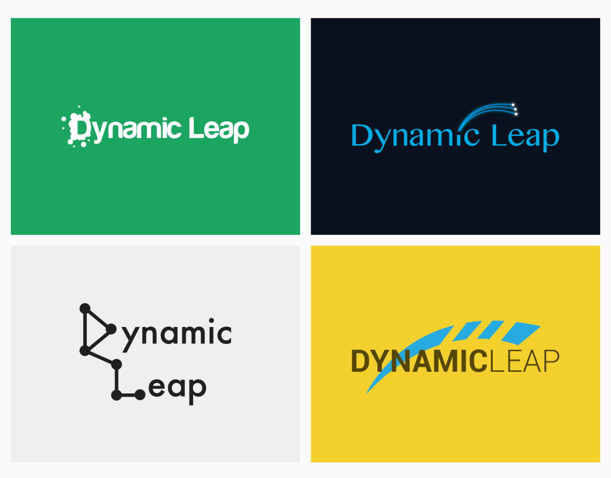
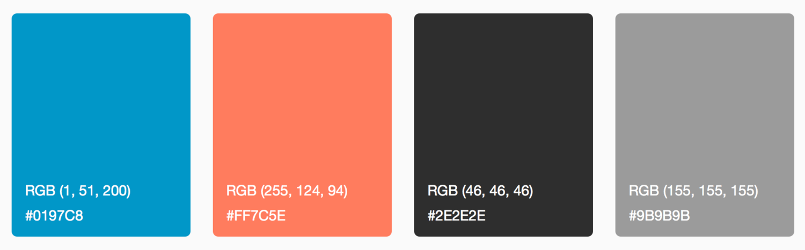
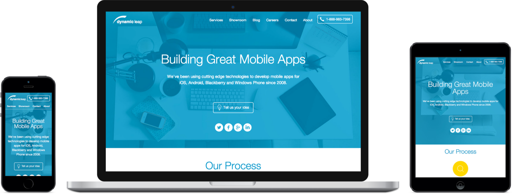

Dynamic Leap Branding & Website
Re-branding
It had been a long time since they had updated their branding and the website. So, when I came on board, my first task was to do a re-branding of the company along with the website. The logo, colors, fonts, business cards, letterheads, website etc. were all to be redone. Since we were a mobile app development agency, our branding and design had to keep up with the modern aesthetics of the app/web world.
The New Logo
The new logo had to represent not only our values but our culture and personality. Dynamic Leap was about being modern, ever changing and in- front of the line. Dynamic representing the ability to not still and leap representing the process of going from nothing to something or in our business, an idea to an app.
Some Early Concepts
Final Logo
Logo Variations
Business Cards
Color Palette
The Website
When I started at Dynamic Leap, their old website was super slow to load (about 30 seconds) and hadn't been updated in years. One of my first tasks was to not only design the new website but to build it as well - since most of the team were iOS developers. I ended up using WordPress with a custom theme to create the new website. The whole process took about 3 months and a super fun project. Even though I knew a little php, WordPress was very new to me as was coding up a responsive website so I ended up learning a lot.
You can visit the site here.